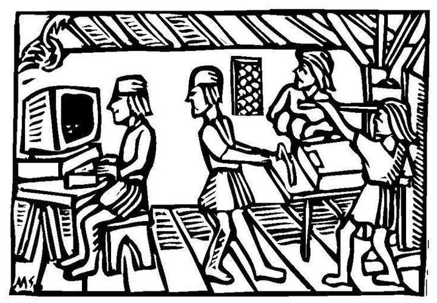

MarkDown⧫

Citation :
Between the years 3500 BC and 3000 BC, some unknown Sumerian geniuses invented a system for storing and processing information outside their brains, one that was custom-built to handle large amounts of mathematical data. The Sumerians thereby released their social order from the limitations of the human brain, opening the way for the appearance of cities, kingdoms and empires. The data-processing system invented by the Sumerians is called ‘writing’.
Yuval Noah Harari, Sapiens: A Brief History of Humankind
J’emprunte ici l’usage de cette citation à Yann HOURY que je remercie vivement de m’avoir fait découvrir Obsidian, aussi je vous invite avant de vous embarquer dans mes explications techniques, à lire son explication du Pourquoi écrire en Markdown ?
Introduction⧫

Markdown est un langage de description à balisage plus léger à coder que des balises HTML.
Son code est plus lisible dans l’éditeur, plus pratique et rapide pour rédiger et publier un document sur le Web.
Le principal défaut de MarkDown est son manque d’unification : il existe plusieurs versions de ce langage qui, à partir d’une syntaxe de base commune, possèdent d’autres éléments additionnels souvent très spécifiques…
Cependant il est de plus en plus utilisé :
- incontournable sur GitHub,
- le site de partage d’informations Reddit,
- les éditeurs en ligne comme StackEdit ou HedgeDoc qui est lui collaboratif,
- les forums Discord, Stack Overflow et bien sur le forum d’Obsodian…
Mais c’est surtout le langage que nous utiliserons pour rédiger du texte enrichi dans nos notebook.ipynb Jupyter et nos note.md avec le MarkDown d’Obsidian tel que présenté ici.
Remarque :
Vous avez toujours la possibilité de coder en HTML dans lesnote.mdd’Obsidian comme dans les cellules MarkDown d’unnotebook.ipynbde Jupyter…Par exemple, pour écrire des commentaires dans un code en MarkDown on peut utiliser la syntaxe HTML :
<!-- mon commentaire -->
En fait, dans Obsidian, les fichiers note.md sont bien plus que du simple texte destiné à produire un affichage enrichi, ils constituent aussi une véritable base de données dans laquelle les marqueur de MarkDown facilitent la recherche d’informations…
Cliquer pour voir le code MarkDown qui produit le rendu ci-dessus
## Introduction
![Logo]
[**Markdown**][1] est un langage de description à balisage plus léger à coder que des balises HTML.
Son code est plus lisible dans l'éditeur, plus pratique et rapide pour rédiger et publier un document sur le Web.
Le principal défaut de MarkDown est son manque d'unification : il existe plusieurs versions de ce langage qui, à partir d'une syntaxe de base commune, possèdent d'autres éléments additionnels souvent très spécifiques...
Cependant il est de plus en plus utilisé :
- incontournable sur [GitHub],
- le site de partage d'informations [Reddit],
- les éditeurs en ligne comme [StackEdit] ou [HedgeDoc] qui est lui collaboratif,
- les forums [Discord], [Stack Overflow] et bien sur le [forum d'Obsodian]...
Mais c'est surtout le langage que nous utiliserons pour rédiger du texte enrichi dans nos [`notebook.ipynb` Jupyter][bn-md] et nos `note.md` avec le MarkDown d'Obsidian tel que présenté ici.
**Remarque** :
Vous avez toujours la possibilité de coder en HTML dans les `note.md` d'Obsidian comme dans les cellules MarkDown d'un [`notebook.ipynb` de Jupyter][bn-html]...
Par exemple, pour écrire des commentaires dans un code en MarkDown on peut utiliser la syntaxe HTML : `<!-- mon commentaire -->`
<!-- Ceci est un commentaire qui ne sera donc pas affiché -->
En fait, dans Obsidian, les fichiers `note.md` sont bien plus que du simple texte destiné à produire un affichage enrichi, ils constituent aussi une véritable base de données dans laquelle les marqueur de MarkDown facilitent la recherche d'informations...
<!-- Liste des liens pour l'introduction : -->
[1]: https://fr.wikipedia.org/wiki/Markdown "Page Markdown sur Wikipedia"
[GitHub]: https://guides.github.com/features/mastering-markdown/ "Guide MarkDown de GitHub"
[Reddit]: https://www.reddit.com/wiki/markdown "Guide MarkDown de Reddit"
[StackEdit]: https://stackedit.io/ "Page de l'éditeur MarkDown StackEdit"
[HedgeDoc]: https://demo.hedgedoc.org/features?both "Page de demonstration du Markdown de HedgeDoc"
[Discord]: https://discord.gg/obsidianmd "Discord d'Obsidian"
[Stack Overflow]: https://stackoverflow.com/editing-help "Aide Markdown de Stack Overflow"
[forum d'Obsodian]: https://forum.obsidian.md/ "Forum d’Obsodian"
[bn-md]: https://nbviewer.org/urls/ericecmorlaix.github.io/bn/MarkDown-Le_BN_pour_rapporter.ipynb "Notebook d'initiation au Markdown de Jupyter"
[bn-html]: https://nbviewer.org/urls/ericecmorlaix.github.io/bn/HTML-Le_BN_pour_multimedier.ipynb "Notebook d'initiation au HTML de Jupyter"
[Logo]: https://upload.wikimedia.org/wikipedia/commons/4/48/Markdown-mark.svg "Logo du langage MarkDown"
Cliquer pour comparer avec le code HTML qui produit le même affichage
<h2>Introduction</h2>
<img src="https://upload.wikimedia.org/wikipedia/commons/4/48/Markdown-mark.svg" title="Logo du langage MarkDown" alt="Logo du langage MarkDown">
<p>
<a href="https://fr.wikipedia.org/wiki/Markdown" target="_blank" title="Page Markdown sur Wikipedia"><strong>Markdown</strong></a>
est un langage de description à balisage plus léger à coder que des balises HTML.
<br>
Son code est plus lisible dans l'éditeur,
plus pratique et rapide pour rédiger et publier un document sur le Web.
</p>
<p>
Le principal défaut de MarkDown est son manque d'unification :
il existe plusieurs versions de ce langage qui,
à partir d'une syntaxe de base commune,
possèdent d'autres éléments additionnels souvent très spécifiques...
</p>
<p>
Cependant il est de plus en plus utilisé :
<ul>
<li>
incontournable sur <a href="https://guides.github.com/features/mastering-markdown/" target="_blank" title="Guide MarkDown de GitHub">GitHub</a>,
</li>
<li>
le site de partage d'informations <a href="https://www.reddit.com/wiki/markdown" target="_blank" title="Guide MarkDown de Reddit">Reddit</a>,
</li>
<li>
les éditeurs en ligne comme <a href="https://stackedit.io/" target="_blank" title="Page de l'éditeur MarkDown StackEdit">StackEdit</a> ou <a href="https://demo.hedgedoc.org/features?both" target="_blank" title="Page de demonstration du Markdown de HedgeDoc">HedgeDoc</a> qui est lui collaboratif,,
</li>
<li>
les forums <a href="https://discord.gg/obsidianmd" target="_blank" title="Discord d'Obsidian">Discord</a>,
<a href="https://stackoverflow.com/editing-help" target="_blank" title="Aide Markdown de Stack Overflow">Stack Overflow</a> et bien sur le <a href="https://forum.obsidian.md/" target="_blank" title="Forum d’Obsodian">forum d’Obsodian</a>…
</li>
</ul>
Mais c'est surtout le langage que nous utiliserons pour rédiger du texte enrichi
dans nos <a href="https://nbviewer.org/urls/ericecmorlaix.github.io/bn/MarkDown-Le_BN_pour_rapporter.ipynb" target="_blank" title="Notebook d'initiation au Markdown de Jupyter"><code>notebook.ipynd</code> Jupyter</a>
et nos <code>note.md</code> avec le MarkDown d’Obsidian tel que présenté ici.
</p>
<blockquote>
<p>
<strong>Remarque</strong> :
</p>
<p>
Vous avez toujours la possibilité de coder en HTML
dans les <code>note.md</code> d'Obsidian,
comme dans les cellules MarkDown d'un
<a href="https://nbviewer.org/urls/ericecmorlaix.github.io/bn/HTML-Le_BN_pour_multimedier.ipynb" target="_blank" title="Notebook d'initiation au HTML de Jupyter"><code>notebook.ipynd</code> Jupyter</a>...
</p>
<p>
Par exemple, pour écrire des commentaires dans un code en MarkDown
on utilise la syntaxe HTML : <code><!-- mon commentaire --></code>
</p>
<!-- Ceci est un commentaire qui ne sera donc pas affiché -->
</blockquote>
<p>
En fait, dans Obsidian, les fichiers <code>note.md</code> sont bien plus que du simple texte destiné à produire un affichage enrichi, ils constituent aussi une véritable base de données dans laquelle les marqueur de MarkDown facilitent la recherche d'informations...
</p>
Copier/coller les codes MarkDown et HTML ci-dessus dans une note d’Obsidian pour vérifier qu’ils produisent bien le même affichage…
On observe que pour un même résultat affiché, le texte contenu dans le code MarkDown est nettement plus lisible que celui perdu dans le balisage HTML surtout lorsque, comme ici, on rejette les URL des liens avec des [références] en dessous du texte.
Les titres⧫
Cf. documentation obsidian : Titres
Copier/coller le code suivant dans Obsidian et observer le résultat en mode aperçu
# Titre de niveau 1
## Titre de niveau 2
### Titre de niveau 3
#### Titre de niveau 4
##### Titre de niveau 5
###### Titre de niveau 6
####### Il n'y a pas de titre de niveau 7
Un double ## en markdown correspond aux balises <h2></h2> en HTML, etc…
Autres solutions pour obtenir des titres de niveau 1 et 2 :
Souligner avec des `=` produit un titre de niveau 1
===================================================
Souligner avec des `-` produit un titre de niveau 2
---------------------------------------------------
Remarque
Un seul
= ou - suffirait.Leur répétition permet de souligner ces titres également dans le code en mode édition.
Corps de texte⧫
Cf. documentation obsidian : Emphase, Barré, Surligné Code
Copier/coller le code suivant dans Obsidian et observer le résultat en mode aperçu
Ce texte s'affiche avec des retours à la ligne,
dans un seul et même paragraphe,
mais les espaces laissés en trop sont supprimés...
Pour former des paragraphes séparés, il faut laisser une ligne vide entre eux.
On peut obtenir du _texte_ avec *simple emphase* rendu en *italique*,
du __texte__ avec **forte emphase** rendu en **Gras**,
du **_Texte_** à la fois en **gras** et en *italique*,
du `code source` rendu en caractères `monospaces`,
du ~~texte barré~~ rendu avec une ligne en travers du texte.
On peut aussi ==surligné==.>
Activer les “sauts de lignes stricts” dans les options de l’éditeur d’Obsidian. Que se passe-t-il ?
- Les sauts de lignes simples ne provoquent pas de retours à la ligne dans le dernier paragraphe ;
- sauf si on ajoute deux espaces à la fin d’une ligne avant de faire un retour à la ligne comme dans le premier paragraphe.
Une ligne vide en MarkDown fait changer de paragraphe qui correspond aux balises <p></p> en HTML.
Un retour à la ligne simple en MarkDown (ou avec deux espaces si “sauts de lignes stricts”) correspond à une balise <br> en HTML.
Les listes⧫
Liste à puces⧫
Cf. documentation obsidian : Liste à puces
Copier/coller le code suivant dans Obsidian et observer le résultat en mode aperçu
* Un élement de liste ;
Une précision concernant cet élément...
- Un autre élément de liste ;
- Un second élément de cette liste ;
* Un élément de sous-liste ;
* Un autre élément de sous-liste ;
* Un élément de sous-sous-liste ;
+ Encore un autre élément de liste.
On place devant chaque item un caractère marqueur -, + ou *, suivi d’au moins une espace
- Une tabulation (ou 4 espaces) laissées devant le marqueur d’item crée une sous-liste ;
- Dans Obsidian :
- Il n’est pas nécessaire de commencer par sauter une ligne ;
- un changement de marqueur d’item de liste entre
-,+ou*en MarkDown, balises<li></li>en HTML, provoque un changement de liste soit la création d’une nouvelle liste non ordonnée, balises<ul></ul>en HTML.
Liste ordonnée⧫
Cf. documentation obsidian : Liste ordonnée
Copier/coller le code suivant dans Obsidian et observer le résultat en mode aperçu
4. Le quatrième élément de ma liste ;
Une précision concernant cet élément...
1. Le cinquième élément de ma liste ;
1. Le premier élément de ma sous-liste ;
72. Le second élément de ma sous-liste ;
1024. Le sixième élément de ma liste.
On procède de même, mais en précédant chaque item d’un nombre suivi d’un .
Dans Obsidian la numérotation démarre à partir du nombre indiqué devant le premier item listé mais, afin de rompre avec l’élément précédent, il faut sauter une ligne avant de commencer un liste ainsi ordonnée, balises <ol></ol> en HTML.
Liste de taches⧫
Cf. documentation obsidian : Liste de taches
Copier/coller le code suivant dans Obsidian et observer le résultat en mode aperçu
- [ ] Une tâche de ma todo liste ;
- [x] Une autre tâche de ma todo liste ;
- [x] une sous tâche de ma todo liste ;
- [ ] une autre sous tâche de ma todo liste ;
- [w] Encore une autre tâche de ma todo liste.
On insère [ ] ou [x] devant chaque item d’une liste non ordonnée pour ajouter des cases à cocher.
Dans Obsidian,
- marquer avec un
[w]en mode édition, ou tout autre caractère différent d’une espace ou d’unxcoche seulement le bouton radio en mode aperçu ; - marquer avec un
[x]en mode édition, ou cocher le bouton radio en mode aperçu devant une tâche barre le texte de cet item, et s’il s’agit d’une tâche supérieure, cela raye toutes les tâches de sa sous-liste sans exception. - les listes de taches sont particulièrement bien exploitées en gestion de projet…
Trait horizontal⧫
Cf. documentation obsidian : Trait horizontal
Copier/coller le code suivant dans Obsidian et observer le résultat en mode aperçu
``markdown
Une série d'au moins trois*`,
ou trois _,
ou trois - après un saut de ligne,
trace une ligne de séparation.
Trois - peuvent aussi être interprété pour marquer un titre de niveau 2 ou, comme on le verra plus loin, pour définir un séparateur de diapositives ou encore un front matter de metadonnées
Citation⧫
Cf. documentation obsidian : Citation
Admonitions⧫
Cf. documentation obsidian : Admonitions
Les admonitions, ou “callouts” d’Obsidian sont des boites colorées d’avertissements, pour des alertes, mises en garde et autres apartés, qui viennent compléter le flux normal de l’information sur une note pour illustrer ou souligner un point particulier, une difficulté…
Pour expérimenter :
Copier/coller dans une note d’Obsidian les bouts de code suivants :
Remarque : Dans les exemples ci-dessous, les deux espaces laissées au début de chaque ligne devant les chevrons
>ne sont pas obligatoires dans Obsidian…
>[!note]
>De base, il existe 12 styles de boites différentes définies par des noms de types. Si aucun de ces mots clés types n'est précisé, ou si le mot clé n'est pas reconnu (*généralement parce que mal orthographié*), c'est ce type `note` qui sera utilisé par défaut.
>[!abstract]
> Pour un résumé, un sommaire, un développement trop long à lire...
>[!example]+
>Ici un exemple d'avertissement repliable déplié par défaut et ci-dessous des avertissements dépliables tous repliés par défaut...
>[!danger]-
>**Toto** est dans la place !
>>_Ceci est une mise en garde, on vous avait prévenu du danger !!_
>[!tip]- Pour définir un titre ==personnalisé== :
>Il suffit de l'écrire en markdown après le `[!tip]-` que l'on utilise pour une astuce, un indice, une note importante...
>[!question]- Est-ce que les avertissements peuvent s'imbriquer ?
>>[!success] Oui, c'est le cas dans Obsidian.> >
>>>[!failure] Mais le rendu ne fonctionne pas dans [MkDocs](https://ericecmorlaix.github.io/simple_template_obsidian_mkdocs/Fonctions/3-Admonitions/).
>>>>[!quote]
>>>>"_Si vous avez besoin de quelque chose, appelez moi.
>>>>Je vous dirai comment vous en passer._"
>>>>Coluche
>[!warning | left]-
>Il faut utiliser de préférence **les valeurs par défaut** `note`, `abstract`, `info`, `tip`, `success`, `question`, `warning`, `failure`, `danger`, `bug`, `example`, `quote`, *et ainsi éviter leurs alias !*
>[!bug | right]-
>Avec ce code `[!bug | right]` cet avertissement s'aligne à droite dans [MkDocs](https://ericecmorlaix.github.io/simple_template_obsidian_mkdocs/Fonctions/3-Admonitions/),
>et le précédent à gauche avec le code `[!warning | left]`,
>mais ce n'est pas le cas de base dans Obsidian...
A venir…
Code en ligne⧫
Exemple : Ceci est du `code`.
Bloc de code⧫
Note de bas de page⧫
Exercices de MarkDown⧫
Un tutoriel en ligne pour découvrir la syntaxe MarkDown et s’entrainer à l’écrire : https://www.markdowntutorial.com/fr/
En résumé⧫
Inspiré du guide obsidian de Johackim
Syntaxe Markdown⧫
Obsidian utilise la syntaxe Markdown par défaut :
- Bullet List: Créer une liste1. Number List: Créer une liste numérique**bold**: Créer un texte en gras*italic*: Créer un texte en italique**souligner**: Créer un texte souligné~~Strikethrough~~: Créer un texte barré> quote: Créer une citation# Heading 1: Créer un titre de niveau 1## Heading 2: Créer un titre de niveau 2### Heading 3: Créer un titre de niveau 3
Syntaxe d’Obsidian⧫
Mais il a quelques spécificités de syntaxes supplémentaires :
[^Ref]et[^Ref]: Footnote text.: Créer une note de bas de page^[Footnote text]: Créer une note de bas de page en une ligne==highlight==: Créer un texte surligné- [ ] Task list: Créer une tâche- [x] Task list: Cocher une tâche